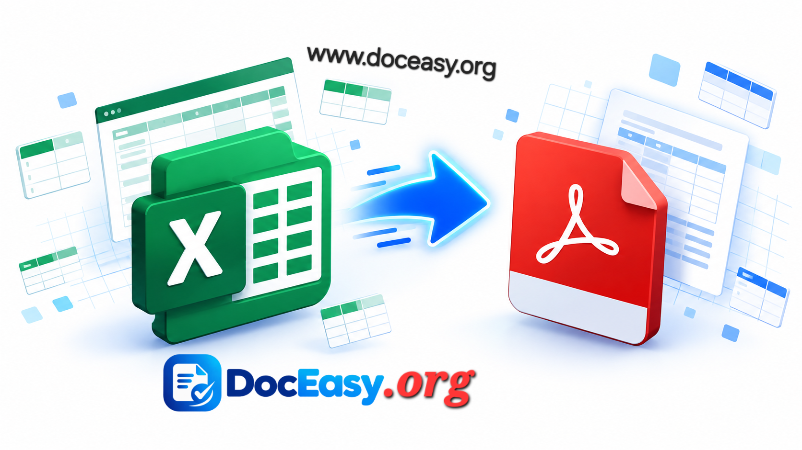

Excel to PDF
Convert Excel spreadsheets (XLS / XLSX) to PDF instantly. 100% browser-based — your files never leave your device.
Drop your Excel file here
or click to browse · XLS and XLSX supported · Max 25 MB
Processing…
Why use DocEasy for Excel to PDF?
- 100% private — files never leave your device
- All sheets converted in one PDF
- Tables, headers, and data preserved
- Free forever — no signup required
How to Convert Excel to PDF: Complete Guide
Excel spreadsheets are perfect for working with data, but they are not always the best format to share. The moment you send an .xlsx file to someone, their version of Excel might display it differently — columns might shift, formatting might break, and hidden rows might become visible. A PDF locks everything in place. This is why Excel to PDF conversion is one of the most common tasks in modern offices, schools, and small businesses.
The DocEasy Excel to PDF tool converts your spreadsheets directly in your browser. No upload, no signup, no waiting. Your data stays on your device the whole time, and you get a clean, print-ready PDF in seconds.

Why Convert Excel to PDF?
Excel is a powerful format for editing and analyzing data, but it is not ideal for sharing final versions. When you send an Excel file, the receiver can accidentally edit numbers, delete rows, or expose hidden sheets. A PDF, on the other hand, is read-only by default. It preserves every column, every formula result, and every bit of formatting exactly as you intended.
PDFs are also the standard for printing and archiving. Whether you are sending an invoice, a financial report, a sales summary, or a school grade sheet, PDF ensures that the document looks the same on every device — Windows, Mac, Android, or iOS.
Step-by-Step: How to Use the Excel to PDF Tool
- Upload Your Excel File: Drag and drop your
.xlsor.xlsxfile onto the upload zone, or click "Choose Excel File" to browse. Files up to 25 MB are supported. - Automatic Data Extraction: The tool reads your spreadsheet using SheetJS, a JavaScript library that parses XLS and XLSX files entirely inside your browser. Every sheet, row, and cell is captured.
- Table Rendering: Each sheet is rendered as a clean table in the PDF. Headers, borders, and alignment are preserved so the data reads exactly like it does in Excel.
- Watermark Applied: A small doceasy.org watermark appears discreetly at the bottom-right of every page. This keeps your document branded.
- Download Instantly: Your PDF is created as a Blob and downloaded straight to your device. No server, no email, no waiting.
What Kind of Spreadsheets Can You Convert?
- Financial reports: Income statements, balance sheets, and cash flow summaries.
- Invoices and quotes: Convert line-item spreadsheets into clean PDF invoices.
- Sales and inventory lists: Share product catalogs and stock levels as PDFs.
- School grade sheets: Convert student data into a printable format.
- Budget plans: Share household or business budgets as PDFs.
- Data exports: Turn raw spreadsheet data into a polished PDF for reports.
How Tables Are Rendered
The tool detects the used range of each sheet — the area with actual data — and renders it as a structured table. Header rows are shown in bold at the top of each table. Cell borders are drawn to make the data readable. If a sheet has more rows than fit on one page, the table automatically continues onto the next page, so nothing gets cut off.
For very wide spreadsheets with many columns, the columns are compressed slightly to fit the PDF page width. For most standard reports and lists, the output looks clean and professional.
Privacy First — Always
The biggest advantage of DocEasy is privacy. Because everything runs in your browser, your spreadsheet is never uploaded to any server. There is no account to create, no email to verify, and no file sitting in a remote database. When you close the tab, the file is gone from memory. This makes DocEasy suitable for sensitive data like financial records, employee lists, and confidential business reports.
Tips for the Best Results
- Use a
.xlsxfile rather than an old.xlsfile whenever possible — modern XLSX files convert more reliably. - Keep your spreadsheet under 25 MB for the fastest conversion.
- Remove empty sheets before uploading — they will show up as blank pages in the PDF.
- Format your header row with bold text so it stands out in the converted PDF.
- For very wide sheets, consider splitting them into multiple sheets with fewer columns.
- Always keep a backup of your original Excel file — you may want to edit it later.
Frequently Asked Questions
Is the Excel to PDF converter free?
Yes. DocEasy is completely free with no signup, no watermark fees, and no hidden limits.
Are my files uploaded to your servers?
No. Everything runs inside your browser. Your spreadsheet never leaves your device.
Will multiple sheets be converted?
Yes. Every sheet in your Excel file becomes a section in the PDF, so you get one complete document.
Will formulas be converted?
Formulas are converted to their final calculated values, which is exactly what a PDF needs.
What is the maximum file size?
You can upload Excel files up to 25 MB. For larger files, try splitting the workbook into smaller files.
Does it work on mobile?
Yes. DocEasy works on any modern browser — desktop, tablet, or smartphone — with no app install required.
Try It Now
Ready to convert your Excel spreadsheet? Scroll up and drop your file into the upload zone. The whole process takes just a few seconds, and your PDF will be ready to download immediately. If you find this tool useful, share it with friends and colleagues who need a fast, private way to convert spreadsheets.